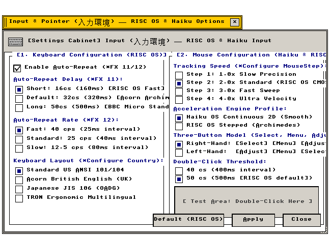

入力環境設定 (Input)
キーボード配列 · キーリピート · ポインタ加速 · ホイール制御
キーボードハードウェア配列、リピート速度、ポインタ加速度曲線の設定仕様
"Keyboard matrix hardware mappings, repeat rate latency registers, and pointer acceleration dynamics."
← 設定フォルダ (Settings Folder Index)
入力環境設定（Input） — キーボード配列（JIS/US）、キーリピート開始遅延および連打速度、ポインティングデバイスの加速度特性を管理する設定アプレット。
"Input peripheral subsystem: scan code mapping, key repeat timing parameters, and ballistic mouse acceleration curves."
画面プレビュー (Screen Preview)

実機描画フレームバッファより自動抽出された透過入力環境設定ウィンドウ (Native Headless GDEV Capture)
概要 (Overview)
キーボード配列（JIS/US）、キーリピート開始遅延および連打速度、ポインティングデバイスの加速度特性を管理する設定アプレット。
"Input peripheral subsystem: scan code mapping, key repeat timing parameters, and ballistic mouse acceleration curves."
基本操作仕様 (Operational Specifications)：
・[標準 (Default)]：工場出荷時の初期設定に復元します。
・[適用 (Apply)]：設定変更を確定し、システム状態へ反映します。
・[閉じる (Close)]：設定ウィンドウを破棄します（cls_wnd()）。
1. キーボードハードウェア配列とリピート特性 (Keyboard Layout & Repeat)
接続されたキーボードのスキャンコード変換テーブルおよびキーリピート動作の設定仕様。
"Keyboard scan-code translation tables and hardware repeat timing registers."
| 設定項目・機能名 |
動作概要と視覚仕様 (Functional Specification) |
技術仕様・幾何学構造 (Technical / C99 Definition) |
JIS 106/109-key Japanese Layout
JIS 日本語配列 |
OADG/JIS標準106/109キー配列。無変換・変換・かなキーを正しくマッピングします。 |
マッピング: src/drivers/keyboard.c
C99: g_state_input.checks[0] |
US-ASCII 101/104-key ANSI Layout
US 英語配列 |
ANSI 101/104キー英語配列。記号キー位置（@, :, [, ]等）を標準英語配列へ適合させます。 |
マッピング: US ANSI Scan Code
C99: g_state_input.checks[1] |
Hardware Key Repeat (30 cps)
高速キーリピート |
キー長押し時の連続入力速度を毎秒30文字（30 characters per second）に設定します。 |
リピート周波数: 30 Hz
C99: g_state_input.checks[2] |
Key Repeat Latency: Short (250 ms)
リピート開始遅延 短縮 |
キー押下からリピート開始までの待機時間を短縮（250ms）し、軽快な操作感を実現します。 |
開始遅延: 250 ms
C99: g_state_input.checks[3] |
2. ポインティングデバイス制御 (Pointer Dynamics & Scroll Wheels)
マウス・タッチパッドの移動加速度およびスクロールホイールの回転方向設定仕様。
"Pointer ballistic acceleration multiplier and optical wheel delta inversion parameters."
| 設定項目・機能名 |
動作概要と視覚仕様 (Functional Specification) |
技術仕様・幾何学構造 (Technical / C99 Definition) |
Pointer Acceleration: Smooth Curve
ポインタ滑らか加速 |
マウス移動速度に応じた動的加速曲線を適用し、微細な位置決めと素早い画面横断を両立します。 |
加速係数: 1.5× ノンリニア曲線
C99: g_state_input.checks[4] |
Invert Scroll Wheel Direction
ホイール回転方向反転 |
マウスホイールの上下スクロール方向を反転（ナチュラルスクロール動作）させます。 |
ホイール増分: -delta 変換
C99: g_state_input.checks[5] |
3. 全設定パラメータ仕様一覧 (Configuration Parameter Specifications)
入力環境設定が提供するすべての設定要素、初期値、およびC99内部シンボル。
"Comprehensive parameter specification table: indexing all UI widget states, factory defaults, and underlying C99 data symbols."
| セクション |
パラメータ名 / UI要素 |
標準値 (Default) |
設定値 / 選択肢 |
C99 内部変数・シンボル |
| [1] キーボード |
JIS 106/109-key Layout |
有効 (TRUE) |
チェックボックス |
g_state_input.checks[0] |
| [1] キーボード |
US-ASCII 101/104-key |
有効 (TRUE) |
チェックボックス |
g_state_input.checks[1] |
| [1] キーボード |
Key Repeat (30 cps) |
有効 (TRUE) |
チェックボックス |
g_state_input.checks[2] |
| [1] キーボード |
Repeat Delay (250 ms) |
有効 (TRUE) |
チェックボックス |
g_state_input.checks[3] |
| [2] マウス・ポインタ |
Pointer Acceleration |
有効 (TRUE) |
チェックボックス |
g_state_input.checks[4] |
| [2] マウス・ポインタ |
Invert Scroll Wheel |
有効 (TRUE) |
チェックボックス |
g_state_input.checks[5] |
| アクション制御 |
[ 標準 (Default) ] |
— |
初期設定へ復元 |
全フラグTRUEリセット |
| アクション制御 |
[ 適用 (Apply) ] |
— |
変更確定と再描画 |
is_dirty = FALSE, redraw_all_windows() |
| アクション制御 |
[ 閉じる (Close) ] |
— |
ウィンドウ破棄 |
cls_wnd(wnd) |
関連コンポーネント (Related Components)